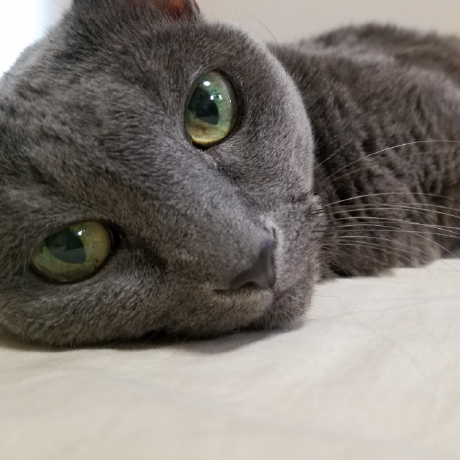
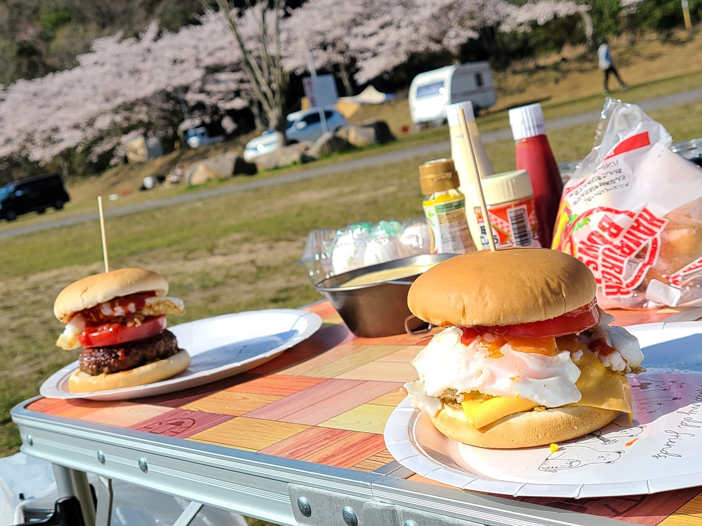
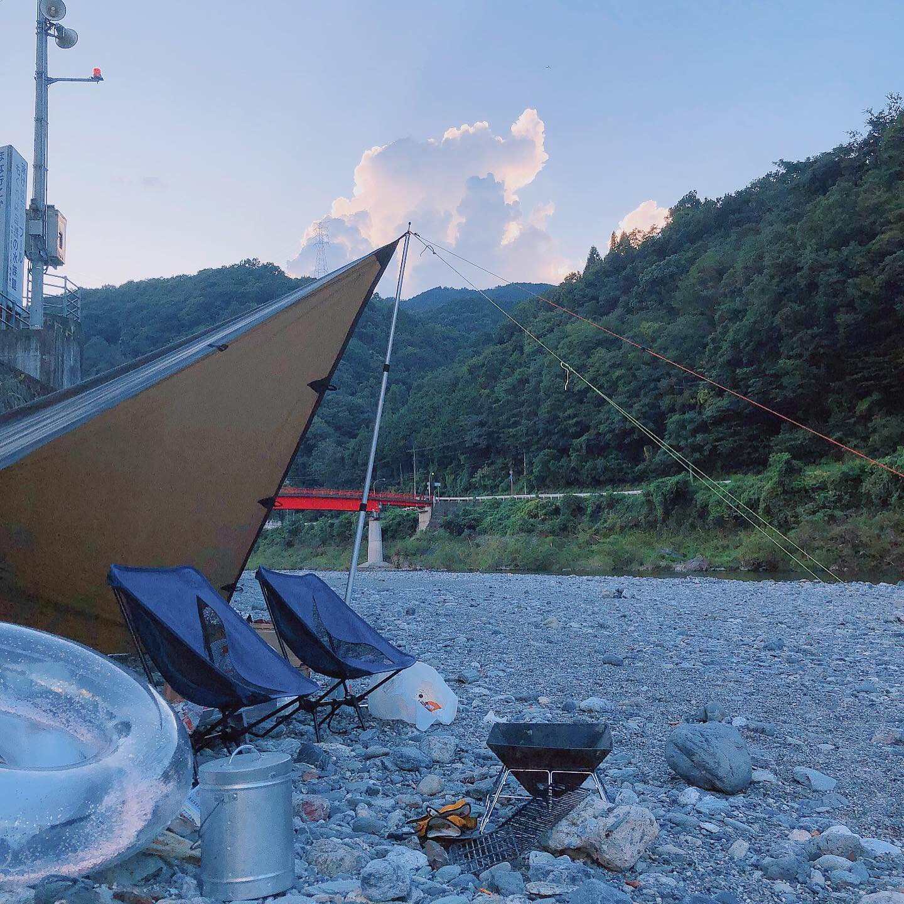
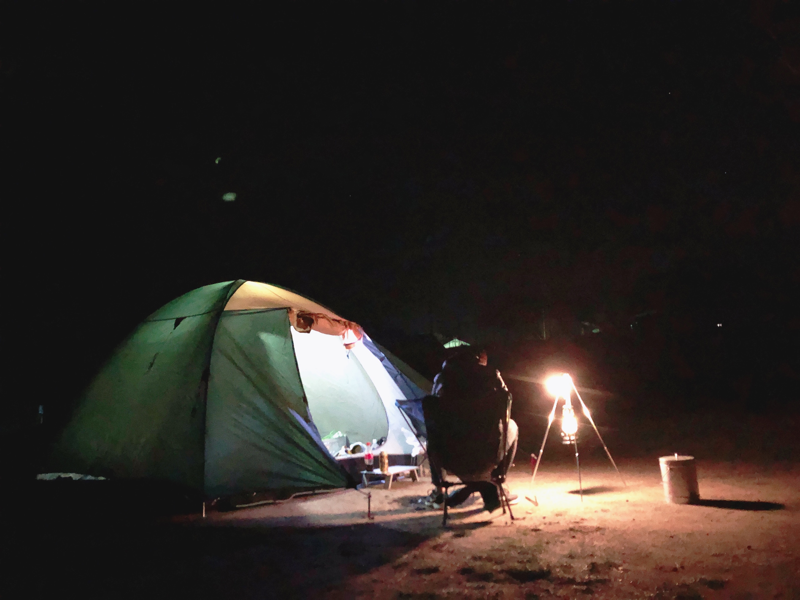
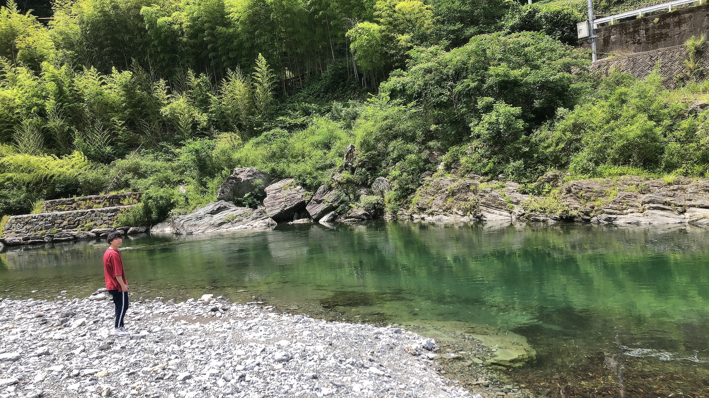
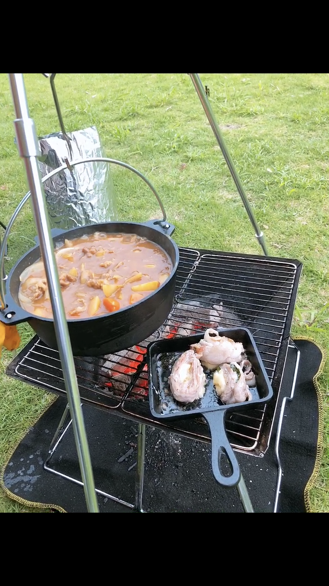
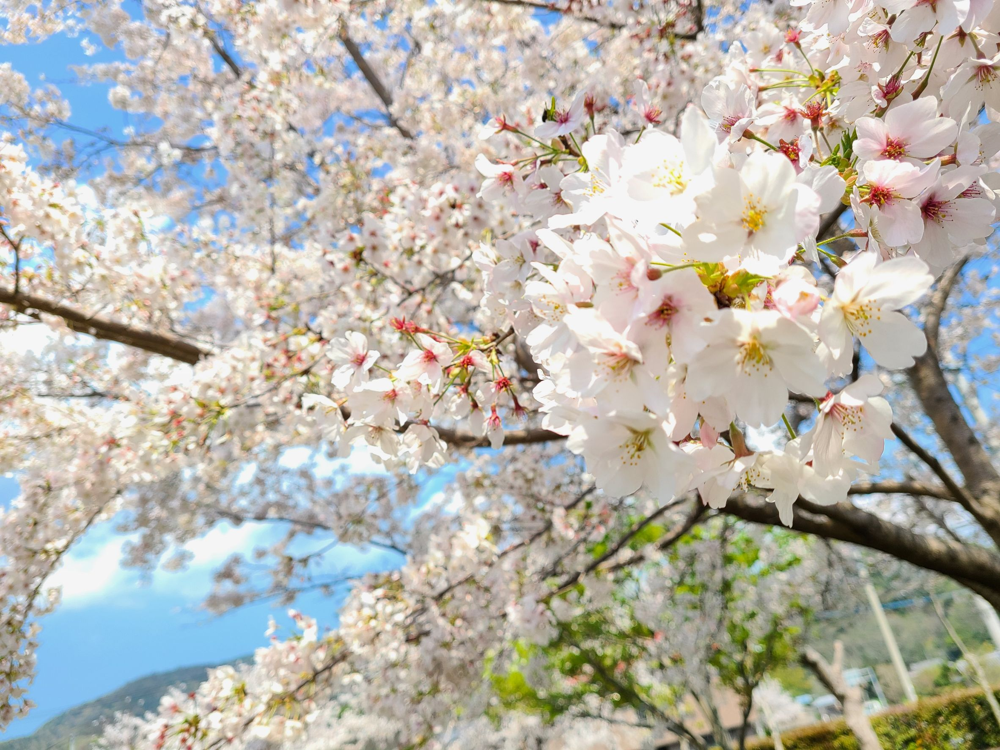
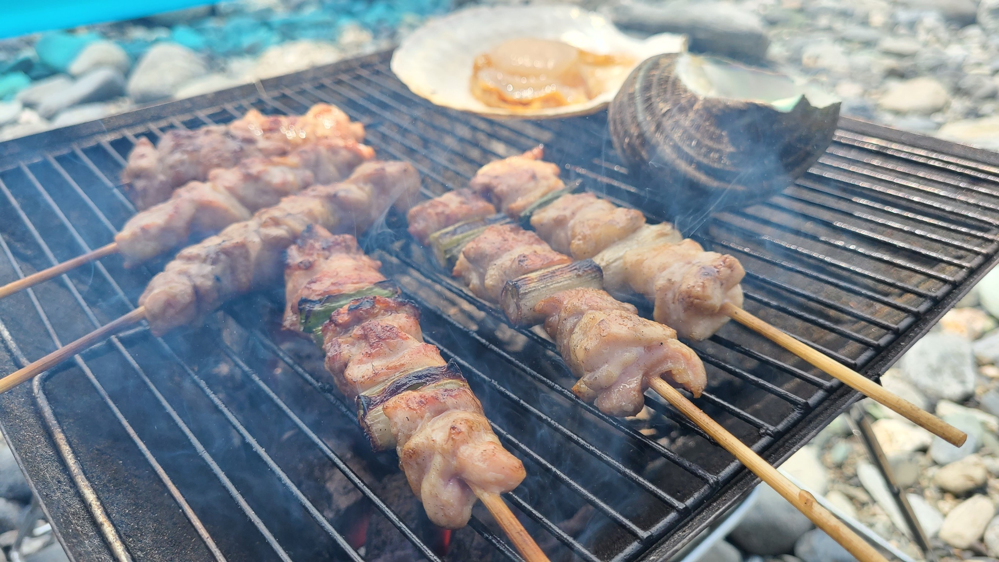

概要
このページは櫻木すみれのポートフォリオサイトになります。
よろしければご覧ください。
自己紹介
櫻木すみれ
1992年11月11日生まれ。徳島生まれ徳島育ち。
2015年に徳島文理大学人間生活学部食物栄養学科を卒業。
2018年~2020年の間、栄養士として病院に従事、そこでは症状に合わせた病院食を約150食、職員の昼食を約200食作っていました。
スキルアップの為、職業訓練でMicrosoftofficeソフト、webプログラミング、pythonを学習しました。
趣味はキャンプ、釣り、ゲームなど。
写真は飼い猫のロシアンブルーです。
Github
https://github.com/oyo6464
制作物紹介
四択問題作成アプリ
内容：ユーザーが四択クイズを1~3問作成し、URL経由で共有できるアプリです。任意で画像をアップロードすることができ、正解率が高かった場合表示することができます。
使用したもの：Pythonのフレームワークflaskを使い作成しました。サーバーはHeroku、ストレージとしてはAWSのS3を使用しています。
工夫した点
画像のアップロードや作成したい問題数を任意で変えられるようにすることで 柔軟性を持たせました。 httpステータスエラーがそのまま出力されないよう気を付け、アップロードできる画像の拡張子も限定しています。
苦労した点
初めて制作するwebアプリだったので詰まった点はたくさんありますが、中でもアップロード機能の制限や、S3関係で苦戦しました。 また、開発環境やブラウザによってエラーハンドリングの挙動が違い、そこでも悩まされました。
自己紹介ポートフォリオサイト
現在ご覧いただいているこのサイトです。
html,cssで作成しており、サニタイズcssを使用しています。
使用している言語やソフト
〇オフィスソフト
Microsoftofficeソフト(Word、Excel、AccessPowerPoint)は使用経験があり、ExcelとAccessに関しては Microsoft Office Specialist Excel, Microsoft Office Specialist Accessを取得しています。
〇使用言語
・Python
独学で勉強、また職業訓練でも学習しています。 上記で紹介しましたが、webアプリを作成したり、ライブラリを使用して簡単なソースコードを書くことが可能です。また趣味ですが、簡単なゲーム開発の勉強をしています。
〇その他
使用したことのあるツール、環境、サービスなど
git/AWSS3/Heroku/windows10/vscode/nginx/MySQL/ExcelVBA
趣味紹介
キャンプ
私の趣味の１つをここで少しご紹介します。
2019年春ごろからキャンプに興味を持ち、徳島の大自然や、野外料理等を楽しんでいます。
-

お花見キャンプ
香川県のことなみ土器どきひろばでお花見をしながらデイキャンプ
この日はハンバーガーを作りました。 桜が辺り一面に咲き、とても綺麗でした。 -

穴吹川キャンプ
徳島県美馬市の穴吹川の中流である、二又の瀬でデイキャンプ
穴吹川は日本一の清流と呼ばれており、水がとても澄んでいます。
川遊びを楽しみました。 -

美濃田の淵キャンプ場
東みよし町にある、美濃田の淵キャンプ場で泊まりキャンプ
近くに吉野川があり、大自然が楽しめるお気に入りのキャンプ場です。
夜に焚き火をしながら星を眺めてすごしました。
その他画像
その他にも、画像を少しご紹介します
- 
- 
- 
- 
まとめ
最後までご覧いただきありがとうございました。